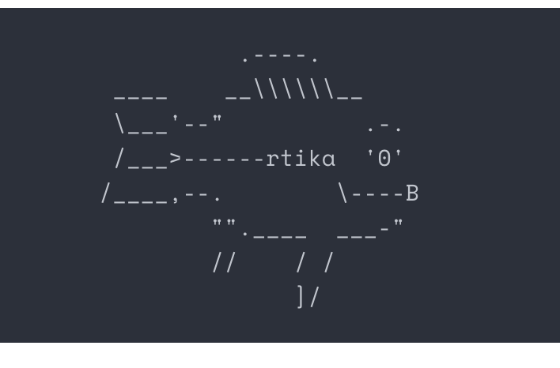
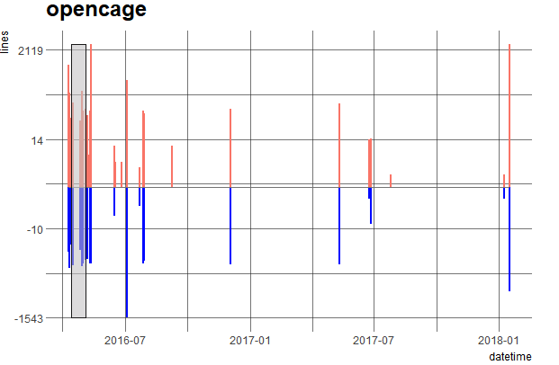
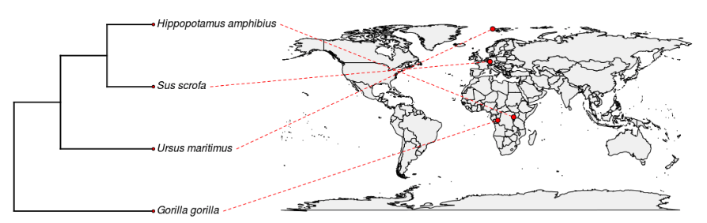

May 7, 2018
Software 📦
CRAN: GitHub:
New packages
- A new package
rtika(v0.1.8) is on CRAN.rtikaextracts text or metadata from over a thousand file types, using Apache Tika https://tika.apache.org/. Get either plain text or structured XHTML content. This package recently went through rOpenSci review. Check out the rtika docs to get started.
Releases
- A new version (
v2.1.1) ofRNeXMLis on CRAN, which provides access to phyloinformatic data in NeXML format. See the RNeXML NEWS for details. Check out the RNeXML docs to get started. - A new version (
v0.2.1) ofcomtradris on CRAN.comtradrinterfaces with the United Nations Comtrade API. See the comtradr release notes for details. Check out the comtradr docs to get started.ct_search()updates, and a number of bug fixes - A new version (
v0.1.6) ofcodemetaris on CRAN. See the codemetar release notes for details. Check out the codemetar docs to get started.New functions
extract_badges()andgive_opinion(), and lots of updates and changes 🚀 - A new version (
v0.2.1) oftaxais on CRAN.taxaprovides taxonomic classes for groupings of taxonomic names without data, and those with data. See the taxa release notes for details. Check out the taxa docs to get started.lots of fixes/changes + a new maintainer! Zachary Foster
- A new version (
v2.1) oftesseractis on CRAN.tesseractprovides bindings to the Tesseract https://opensource.google.com/projects/tesseract OCR engine. See the tesseract NEWS for details. Check out the tesseract docs to get started. - A new version (
v2.0) ofjsonldis on CRAN. See the jsonld release notes for details. Check out the jsonld README to get started.Update bundled jsonld.js library …
- A new version (
v0.5) ofroadoiis on CRAN.roadoiinterfaces with the Unpaywall API https://unpaywall.org/products/api. See the roadoi release notes for details. Check out the roadoi docs to get started.re-branding oaDOI to Unpaywall, an minor fixes
- A new version (
v0.3.4) oftidyhydatis on CRAN. This package provides functions to access historical and real-time national hydrometric data from Water Survey of Canada data sources. See the tidyhydat release notes for details. Check out the tidyhydat docs to get started.Speed improvements! and other stuff
- A new version (
v0.2.0) ofgetlandsat(download Landsat 8 data) is on CRAN. See the getlandsat release notes for details. Check out the getlandsat docs to get started.s/httr/crul/
- A new version (
v0.3.0) oforiginris on CRAN. See the originr release notes for details. Check out the originr README to get started.s/httr/crul/
- A new version (
v0.2.0) ofbikedata(download/aggregate data from public hire bicycle systems) is on CRAN. See the bikedata release notes for details. Check out the bikedata docs to get started.New cities! San Francisco, Minneapolis/St Paul, Montreal Canada, & Guadalajara Mexico; and easier to add new cities
- A new version (
v1.2.0) ofRefManageR(tools for importing and working with bibliographic references) is on CRAN. See the RefManageR release notes for details. Check out the RefManageR docs to get started.
Archived
- RSelenium has been most likely temporarily archived on CRAN - should be back up there soon. In the meantime, you can install it from GitHub.
- We’ve decided not to revive Reol - it’s archived on CRAN and no longer supported.
Software Review ✔
We accept community contributed packages via our onboarding system - an open software review system, sorta like scholarly paper review, but way better. We’ll highlight newly onboarded packages here. A huge thanks to our reviewers, who do a lot of work reviewing (see the blog post on our review system), and the authors of the packages!
If you want to be a reviewer fill out this short form, and we’ll ping you when there’s a submission that fits in your area of expertise.
The following package recently went through our onboarding process and has been approved!
- suppdata > Downloading Supplementary Data from Published Manuscripts
- Author: William Pearse
- Issue: ropensci/onboarding#195
- Reviewers:
The following three packages were recently submitted:
- phylogram > Dendrograms for Evolutionary Analysis
- Author: Shaun Wilkinson
- Issue: ropensci/onboarding#212
- Note: not assigned yet
- outcomerate > AAPOR Survey Outcome Rates
- Author: Rafael Pilliard Hellwig
- Issue: ropensci/onboarding#213
- Reviewers:
- skynet > Generates Networks from Bureau of Transport Statistics Data
- Author: Filipe Teixeira
- Issue: ropensci/onboarding#214
- Reviewers:
On the blog
main blog
- Sasha Goodman wrote about his rtika package that recently went through onboarding with rOpenSci: Lessons Learned from rtika, a Digital Babel Fish.

Maëlle Salmon, from the rOpenSci team, is writing a 3 post series about a data-driven overview of rOpenSci onboarding. She introduces the series in a post Our package reviews in review: Introducing a 3-post series about software onboarding data
- Here’s the first post of the series Rectangling onboarding. There’s a lot of good and fun data wrangling in here; make sure to check it out.
- In the second post in the series, Maëlle and Noam Ross write about How much work is onboarding?

Use cases
The following six works use/cite rOpenSci software:
- Schweiger & Svenning used rgbif in their paper Down-sizing of dung beetle assemblages over the last 53 000 years is consistent with a dominant effect of megafauna losses 1
- Portugal & White used rotl in their paper Miniaturisation of biologgers is not alleviating the 5% rule 2
- Spalink et al. used rentrez in their paper Comparative transcriptomics and genomic patterns of discordance in Capsiceae (Solanaceae) 3
- Zizka cited rgbif in his thesis Big data insights into the distribution and evolution of tropical diversity 4
- Esarey & Bryant used rcrossref in their forthcoming paper Are Papers Written by Women Authors Cited Less Frequently? 5
- Saad et al. used rgbif in their paper Seasonal dynamics of typhoid and paratyphoid fever 6
In the news
Krystian Igras of Appsilon Data Science gave a talk on Data Validation with assertr using our assertr package (maintained by Tony Fischetti) - there’s also a video of the talk available
Tech talk - Data Validation with assertr #appsilon #R #assertr https://t.co/UN5ZercyPV via @SlideShare
— Appsilon DataScience (@AppsilonDS) April 12, 2018
Oliver Pescott wrote a nice blog post about Creating country checklists using GBIF and rgbif using our rgbif package.
Summarising species data per country using #rgbif #gbif https://t.co/QzUIh8dVPH @___BRC___ @CEHScienceNews
— Oliver Pescott (@sacrevert) April 13, 2018
Emily Jane McTavish wrote a nice blog post on How to combine data from Open Tree of Life and GBIF using our [rgif][] and rotl packages.

Desi Quintans started an R package (taxizehelper) with some convenience functions around our package taxize
My first personal #Rstats package is on Github! It's got one function in it, which is a wrapper for parsing the taxize package's output and returning a tidy dataframe of taxonomic information. It was a lot of learning phew https://t.co/p421H39Mjx pic.twitter.com/PBzi3Ci47P
— Desi Quintans (@eco_desi) May 4, 2018
Guangchuang YU wrote a blog post on how to rename phylogeny tip labels in treeio, using the rOpenSci package treeio, which he also maintains
Keep up with rOpenSci
- Mailing list: Sign up with an email address to get this newsletter sent to your inbox -> ropensci.org/#subscribe
- Alternatively, you can subscribe to this newsletter via our XML feed at https://news.ropensci.org/feed.xml or our JSON feed at https://news.ropensci.org/feed.json
- rOpenSci on Twitter: @ropensci
- The rOpenSci blog at ropensci.org/blog - you can subscribe in any RSS aggregator, or manually via https://ropensci.org/feed.xml. We also announce new blog posts on our Twitter account.
Footnotes
-
Schweiger, A. H., & Svenning, J.-C. (2018). Down-sizing of dung beetle assemblages over the last 53 000 years is consistent with a dominant effect of megafauna losses. Oikos. https://doi.org/10.1111/oik.04995 ↩
-
Portugal, S. J., & White, C. R. (2018). Miniaturisation of biologgers is not alleviating the 5% rule. Methods in Ecology and Evolution. https://doi.org/10.1111/2041-210x.13013 ↩
-
Spalink, D., Stoffel, K., Walden, G. K., Hulse-Kemp, A. M., Hill, T. A., Van Deynze, A., & Bohs, L. (2018). Comparative transcriptomics and genomic patterns of discordance in Capsiceae (Solanaceae). Molecular Phylogenetics and Evolution, 126, 293–302. https://doi.org/10.1016/j.ympev.2018.04.030 ↩
-
Zizka, A. (2018). Big data insights into the distribution and evolution of tropical diversity. https://gupea.ub.gu.se/handle/2077/55303 ↩
-
Esarey, Justin, and Kristin Bryant. 2018. “Are Papers Written by Women Authors Cited Less Frequently?” Forthcoming at Political Analysis. http://jee3.web.rice.edu/gender-citation.pdf ↩
-
Saad, N. J., Lynch, V. D., Antillón, M., Yang, C., Crump, J. A., & Pitzer, V. E. (2018). Seasonal dynamics of typhoid and paratyphoid fever. Scientific Reports, 8(1). https://doi.org/10.1038/s41598-018-25234-w ↩